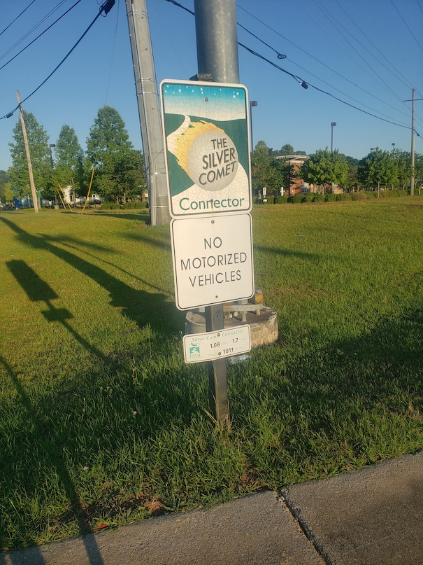
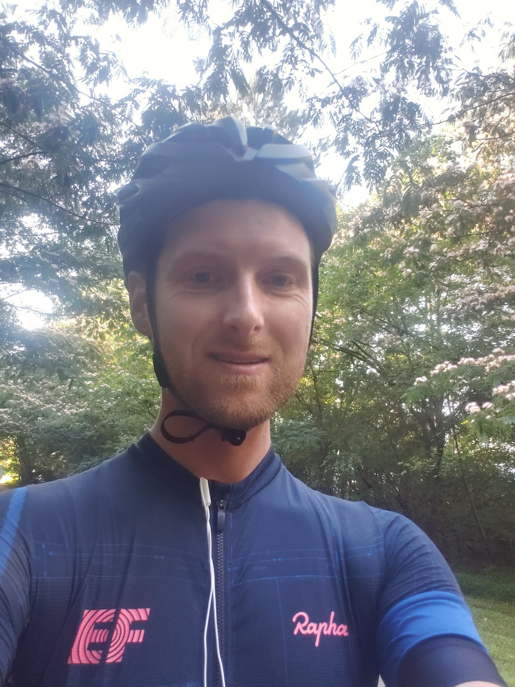
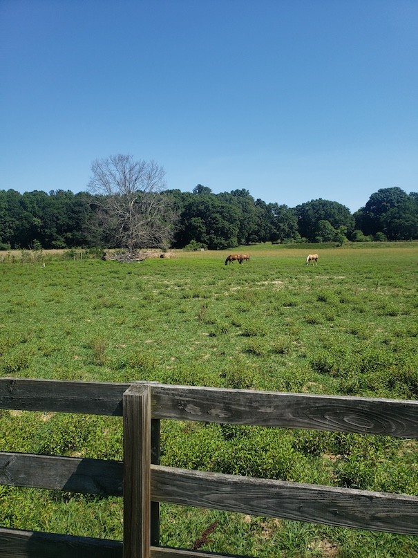
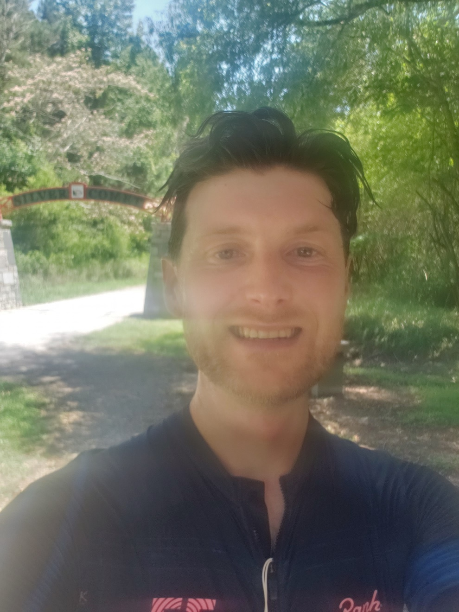
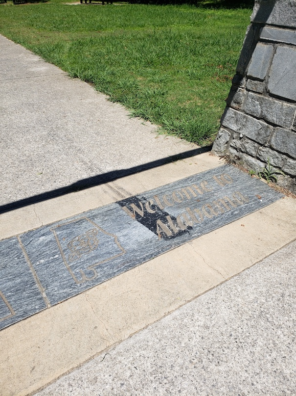
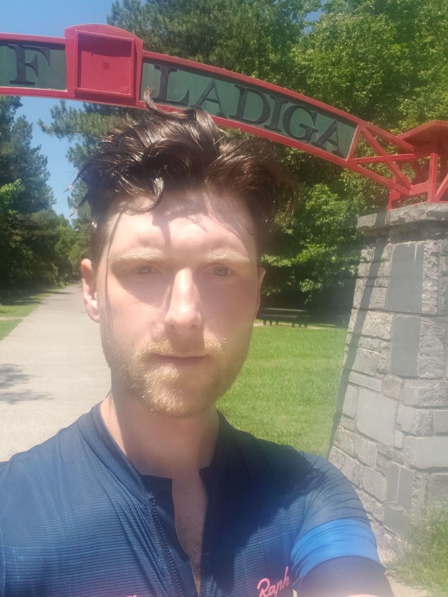
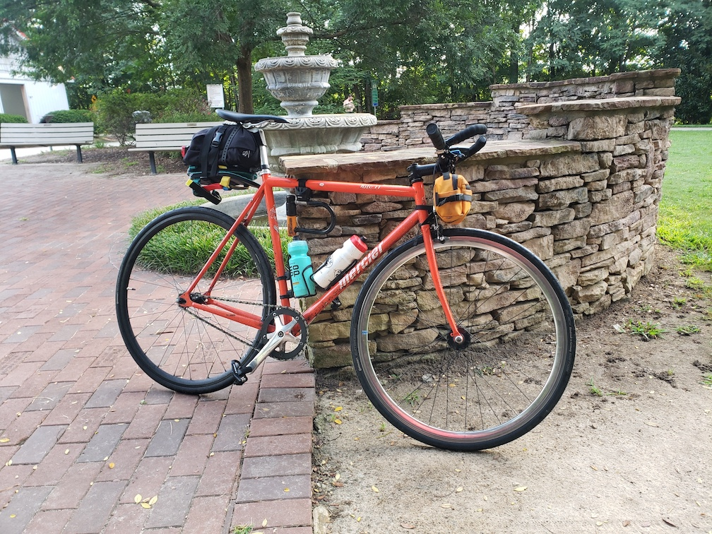
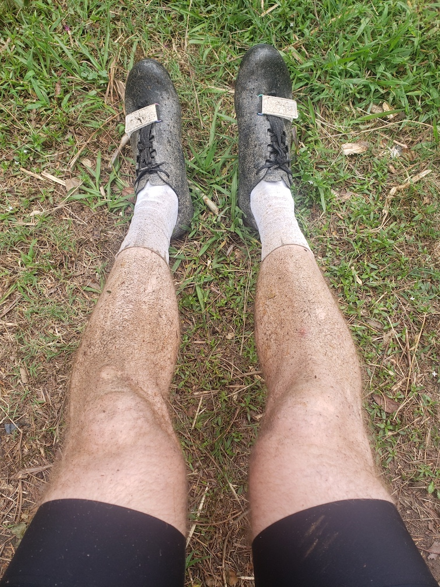
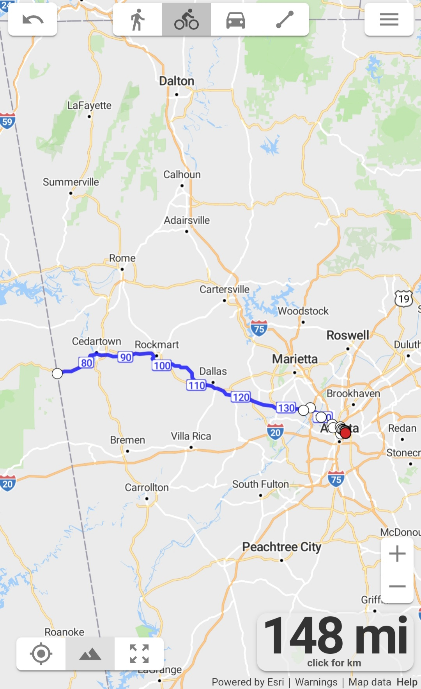

Silver Comet
Performance, 2022
The Silver Comet Trail is a 61.5 mile paved pedestrian trail that begins in Smyrna, GA (just outside of Atlanta) and ends where the western border of Georgia meets Alabama. On June 18, 2022, I rode my single-speed fixed gear bike across the entire trail, including the connecting route from my then-apartment in Atlanta to the trailhead. The entire ride covered 148 miles in 12.5 hours.
In July 2020, I began commuting by bike into work to avoid public transit due to the Covid-19 pandemic. The commute was six miles each way. The mileage was enough for me to build up endurance and fitness. I began encorporating non-commuiting rides on the weekends, and soon later I was completing 100-mile rides. Commuting by bike opened a world of alternate transporation to me, and I began thinking of what kind of travel may be possible by bike.
I woke up at four in the morning and was on the road by five. The first section of the ride was the connection from my apartment to the trailhead - about 12.5 miles. By 11:30AM I reached the Georgia/Atlanta border, having rode 74 miles. I finally returned to my apartment at 5:30pm.
Silver Comet was an exploration of what kind of distance could be travelled by bike. It is also a celebration of a kinship shared by anyone traveling by bike - from the professional peleton to commuters; messengers to mountain bikers; adventure riders to kids riding in their neighborhood.








